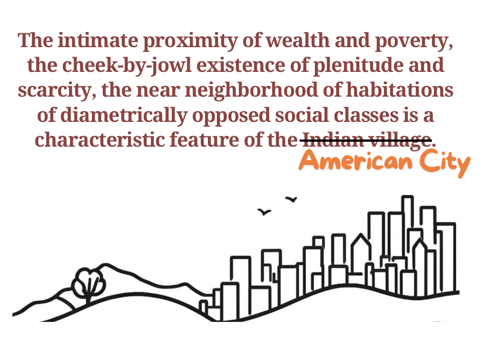
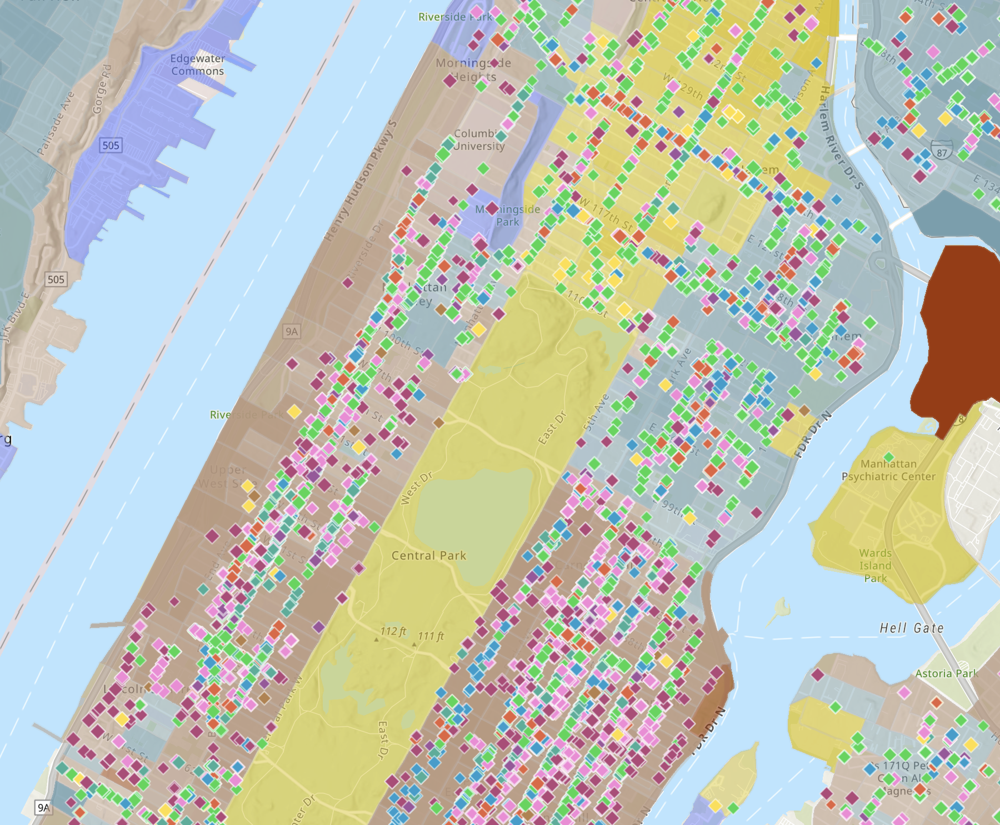
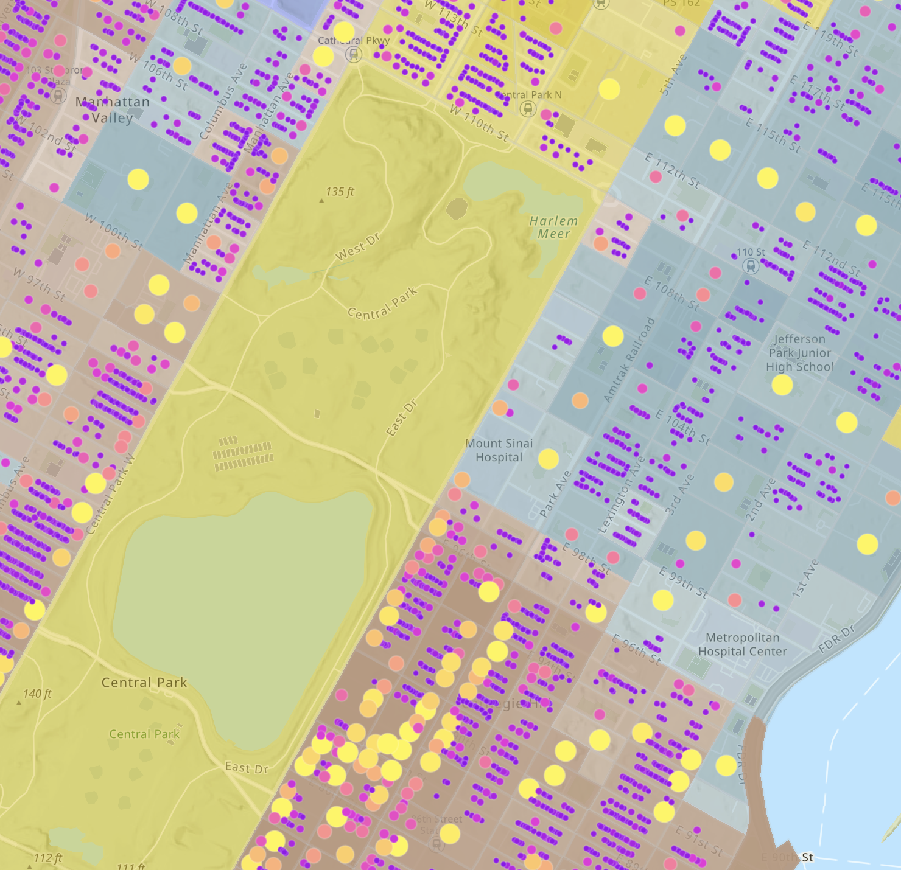
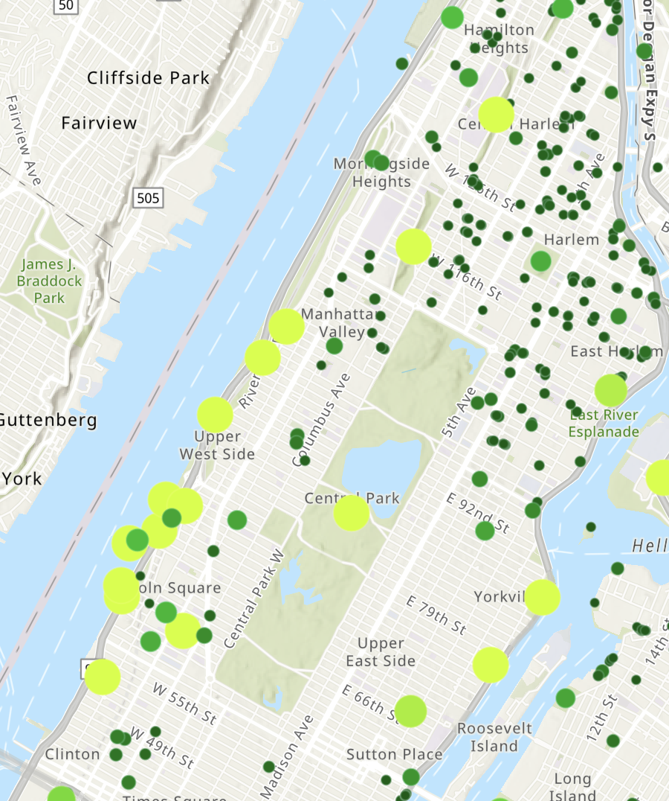

Hidden NYC: Uncovering the Dynamics that Drive Us Apart
By Aaliyah SayedInteractive ArcGIS map visualization here
New York City is revered as a melting pot of cultures,
a place where people from all walks of life intersect and intermingle. However, this idealistic image falls apart after one day spent in Times Square. Even though people coexist within the same half mile, they remain extremely segregated at the street level. The contrast between adjacent streets can be so striking, the boundaries between rich and poor so well-defined, that it appears as though someone randomly assigned each block a socioeconomic and racial status.
This phenomenon is not unique to New York; many urban hotspots, such as Mumbai, boast urban inequality.
As I prepare for my internship in New York City, I reflect on my experiences and my position in the community tapestry. Big Tech, Ivy League, Asian, High Salary, Upper East Side Apartment. Everyone at my internship looks like me, or east asian, or white, and there is not a single person who is black or hispanic. I am told which streets to avoid because they are dangerous, even in broad daylight. Streets that are inhabited by the black and brown residents whom New York City has excluded from the dream that I get to experience.
In this project, I seek to uncover how these boundaries became so rigid. If people are neatly separated in physical space, the cause must also be neatly rooted in physical space. I examine development of residential and commercial properties, as well as the lives of those who inhabit them, to understand the feedback loops that propel separation rather than unity.
These invisible forces are hiding in plain sight, manifested in the physical locations that surround us. While redlining laws have been studied as drivers of segregation, the built environment does the dirty work of upholding boundaries, trapping certain people, and empowering others. From a weed shop across from a local high school tempting students to spend money on drugs, to a financial office across the street inspiring us to prepare for a career in banking, the physical spaces we inhabit propel us to act in ways that are either constructive or destructive to our well-being. This, in turn, reinforces segregation at the block level, shaping wildly different experiences of the same city. Disparities in opportunities emerge sharply across racial lines, and NYC today is the product of a historical campaign to keep races segregated in the same physical space.
Although people live in the same city, there might as well be two versions of it superimposed on top of each other, reminiscent of the "separate but equal" racial policies designed to keep whites and blacks in different physical spaces. The promise of equal amenities was met with neglect, leading to the degradation of the communities inhabiting those spaces. New York City, as it stands, is designed to slot individuals into predetermined buckets, perpetuating a cycle of segregation and inequality. The first step for the City to heal is to acknowledge all of these forces. Below I present a series of map visualizations that build on top of each other, weaving together commercial businesses, race, residential property value, and outdoor recreation. As W.E. Dubois said, you uncover new patterns in data through the act of visualizing that data in space.
Do Drugs, Not Laundry
Commercial Businesses x Race
This is a map of Manhattan with businesses and racial breakdown. The green diamonds are drug and alcohol shops. The red and pink in the Upper East Side are laundry services and parking garages. The brown background is predominantly white neighborhoods, the yellow is black, and the teal is hispanic. Notice the sheer amount of drug and alcohol stores in black and hispanic communities. Imagine you’re a kid in the Bronx or upper manhattan, you’re black, and you grow up surrounded by drug stores. You see people around you using drugs to cope, and you start to do the same. Drugs prevent people from living life on their own terms, and they are being pushed onto black communities. The concentration of predatory industries in communities of color is not accidental. Growing up enveloped by vice industries normalizes destructive behaviors, narrowing imagined possibilities. As B.R. Ambedkar recognized, the spatial and economic "enclosure" of land and resources by dominant groups traps the oppressed in impoverished conditions. This perpetuates a cycle of stationary violence where people are born in a neighborhood, do drugs, succumb to addiction and living life paycheck to paycheck, selling stuff in pawn shops, and then they are not able to escape the bad neighborhood. A crafted system of pawn shops and drug shops keeps them segregated from the posh areas and in poverty.
On the other hand, notice the amount of laundry shops and parking garages on the upper east side. The businesses catering to affluent white communities encourage status-seeking through climbing the career ladder and conspicuous consumption. What message do these businesses send to a kid growing up? It’s screaming “pay to get your laundry done, your time is worth more than that.” Surrounded by private schools and banks, and kids will believe they are above laundry. Laundry is freeing, not trapping - by paying to get your laundry done, you free up time and space to do other stuff and climb whatever ladder you’re on. By paying for drugs, you sacrifice your time and space and fall deeper into whatever trap you’re in. This has nothing to do with race, and everything to do with the buildings that surround you.

30 Blocks North
Race x Property Value
Above and below 97th street transverse road might as well be Earth and Jupiter. The neighborhood demographic goes from 70% white below the road to 50% hispanic and 25% black right above. Property values and proportion of single family homes sharply decline. It’s a haunting contrast. A textbook example of what Brenna Bhandar terms "racial regimes of ownership." Under racial capitalism, property relations and racial subjectivities are "articulated in conjunction with one another," producing starkly unequal urban landscapes.
Friends, family, and strangers tell me don’t go above 97th street ever because it’s not safe… implying I will be the victim of violent crime. Did something horrible happen there that everyone knows about? Or is it people telling segregationist stories to craft a barrier between Us and Them?
This invisible wall dividing communities is constructed through fear-mongering and racist narratives, much like those used to justify "an infection of locality" during the plague outbreak in colonial Bombay. As Kidambi explores, dominant groups spun stories about the allegedly diseased and dirty conditions of the poor to craft a "metonymy between place and disease." Upper caste leaders marked poor, lower caste neighborhoods as pathological threats to be avoided at all costs.
The same exclusionary stories are being told hundreds of years ago in Bombay and in present day New York City. It’s not Race or Caste, past or present - these are merely convenient cover ups. Everyone is Indian in India, so race must not be the delimiter. The delimiter happens to fall on racial lines in America, making socioeconomic and racial segregation inextricably linked. And lucky for white Americans, the boundaries fall directly on the visible, unchangeable color of your skin. Once it is decided that a group will be segregated from another group, any justification can be constructed in defense of the violent erasure.
The wall is held up by stories and fear mongering to the wealthy white collar New Yorkers, keeping them from ever crossing the boundary. On the map, there is a high school a couple blocks north of 97th street. You’re telling me a walk to a high school is unsafe? I wonder about the dreams and aspirations of the kids going to that high school. They dream of becoming leaders, changemakers, and healers – perhaps to uplift their own community, or to make their mark beyond the confines of the city. They have no idea that 30 blocks south, a software engineer is whispering to his friend about the dangers of going above 97th street. And the software engineers have no idea that 30 blocks north are people just like them with the same hopes and fears, except for the number of their block and the color of their skin.
You Touch Grass, I Trade Stocks
Property value x Outdoor Spaces x Race
The map of Manhattan's parks and outdoor recreation spaces reveals a striking disparity in the distribution and valuation of these amenities. The map above shows small green dots for low valuation parks that are scattered all across low income areas, while having big yellow-green dots for high valuation parks. These high value parks are mostly concentrated along the west coast of Manhattan overlooking the Hudson River. In some neighborhoods, such as the Upper East Side, there are almost no parks. However, in the north of Manhattan, we see an abundance of them. As Brenna Bhandar argues, "the invention of race and the attendant distinction between settler and native was a conceptual maneuver that provided a rationale for the establishment of private property as a mechanism for creating and maintaining racial hierarchies. The concentration of high-value, large parks along the affluent west coast of the island, represented by the yellow-green dots, stands in sharp contrast to the small, scattered, low-value green spaces dotting the lower-income, predominantly Black and Hispanic neighborhoods further north.
This uneven landscape is no accident, but rather the product of deliberate choices by real estate interests and city planners, choices that have serious implications for community well-being. As Cedric Robinson states, "the tendency of European civilization through capitalism was thus not to homogenize but to differentiate—to exaggerate regional, subcultural, and dialectical differences into 'racial' ones." The stark absence of parks in the Upper East Side, where astronomically high property values seemingly preclude dedicating space to public greenery, speaks volumes about the priorities of the planners who architected that neighborhood. Meanwhile, the abundance of outdoor spaces in poorer communities to the north could be read as a form of "green redlining," where parks serve as low-cost means of pacifying and containing restive populations, or worse, as Trojan horses for eventual gentrification and displacement. These parks could also be a general sign of poverty for that area where, instead of building proper buildings and institutions, empty land was converted to grass lots that are now the so-called parks.
Perhaps the real estate developers realized the link between mental health and outdoor spaces, and so they built a bunch of parks to improve the mental health of low income communities. Or maybe grass is cheaper than revolving doors. :)
In conclusion,
the stark disparities in the built environment across New York City's neighborhoods reveal how racial capitalism has shaped the urban landscape, perpetuating segregation and inequality. The uneven distribution of businesses, property values, and green spaces along racial lines is not accidental, but rather the product of deliberate choices by those in power.
healing the deep wounds of spatial injustice will require more than cosmetic changes to the cityscape. As long as the logic of racial capitalism remains intact, true integration and equity will remain elusive. Only by confronting the racist underpinnings of property ownership, urban planning, and economic development - and imagining alternative modes of relating to land and each other - can we begin to dismantle the invisible walls that divide us. The first step is to acknowledge the pervasive reach of spatial violence, and to recognize that the very contours of our city are both shaped by and perpetuate racialized harm. From there, we must summon the courage to dream of a radically different urban future - one where the "right to the city" is truly universal, and where the beauty and abundance of New York can be shared by all.
References The Annihilation of Caste - Dr. B. R. Ambedkar, ccnmtl.columbia.edu/projects/mmt/ambedkar/web/readings/aoc_print_2004.pdf. Accessed 7 May 2024. Bhandar, Brenna. “Colonial Lives of Property: Law, Land, and Racial Regimes of Ownership.” Duke University Press, Duke University Press, 25 May 2018, read.dukeupress.edu/books/book/2440/Colonial-Lives-of-PropertyLaw-Land-and-Racial. “Black Marxism, Revised and Updated Third Edition: Cedric J. Robinson.” University of North Carolina Press, 17 Aug. 2022, uncpress.org/book/9781469663722/black-marxism-revised-and-updated-third-edition/. Burghardt, Du Bois William Edward, et al. W.E.B. Du Bois’s Data Portraits: Visualizing Black America: The Color Line at the Turn of the Twentieth Century. The W.E.B. Du Bois Center at the University of Massachusetts, 2022. Kidambi, Prashant. “‘An Infection of Locality’: Plague, Pythogenesis and the Poor in Bombay, c. 1896–1905: Urban History.” Cambridge Core, Cambridge University Press, 21 Jan. 2005, www.cambridge.org/core/journals/urban-history/article/abs/an-infection-of-locality-plague-pythogenesis-and-the-poor-in-bombay-c-18961905/EFFFD9C81009884588E41151B9385971.